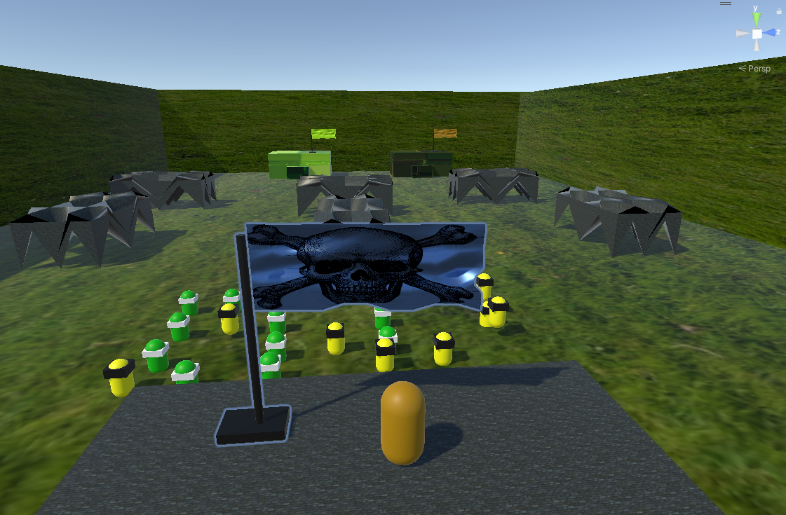

Playable: You can play this game directly in the browser or can download.
There are three clans: Blue, Green, and Yellow. The Hero (Player) belongs to the Green clan. Blue is powerful and seeks to conquer other lands without permission, while Green is a revolutionary clan that always fights against Blue. Although Green is less powerful, they remain resilient. Yellow, on the other hand, is strong but does not involve itself in conquest.
The player’s task is to unite all clans to fight against Blue. The Hero is immortal, meaning he never dies. If defeated, he respawns along with two Yellow allies, symbolizing the endurance of his ideas.
If any Blue clan members enter your safe zone, you will lose, and the game will restart. Therefore, you must push forward against the Blue clan while defending your own territory. Once you reach the Blue clan's safe zone, you’ll face the Blue Enemy leader, whom you must defeat to achieve victory and end the game.
In your team, you have only soldiers, while Blue clan soldiers and cannons oppose you. Coordinate with Green and Yellow allies to secure victory!